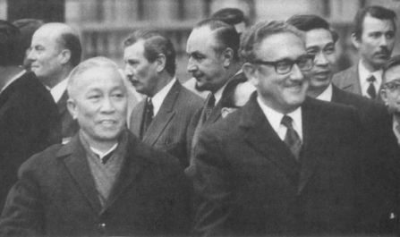

Henry Kissinger ve Le Duc Tho, Paris’te. Ocak 1973
Birleşik Devletler’i ilk başarısız savaş deneyiminden ve Amerikan moral inançlarının fiili durumla çatıştığı ilk dış yükümlülükten kurtarmak görevi Nixon Yönetimi’ne düştü. Bu kadar sıkıntı veren dış politika görevine pek ender rastlanır; hiçbir ülke, böyle bir geçişi, şiddetli acı duymadan başaramamıştır.
Her ne kadar Fransızların Cezayir’den çekilmelerinin Amerikalılar için bir model oluşturduğu sık sık tekrarlanmış ise de, gerçekte bu iş de Gaulle’ün, Nixon Yönetimi’nce Amerika’nın Çinhindi’ndeki ilişkisine son vermek için gereken dört yıldan daha fazla zamanını almıştır. Fransa Cezayir’den çekilirken, de Gaulle, aileleri birçok kuşaktan beri orada yaşayan bir milyon Fransız göçmenini geride bırakmak yükünü omuzlamak zorunda kalmıştı. Nixon ise, Amerikan birliklerini Vietnam’dan çekerken, dört Amerikan başkanının yirmi yıllık bir zaman dilimi içinde, bütün hür insanların güvenliği için hayati önemi olduğunu ilan ettiği yükümlülükleri tasfiye etmek zorunda kaldı.
Nixon bu cesaret kinci görevi üslendiği zaman, Amerika iç Savaş’tan beri en şiddetli iç karışıklık içindeydi. Aradan yirmi beş yıl geçmesine karşın, Vietnam üzerindeki Amerikan ulusal konsensüsünün böyle birdenbire çökmesi, insanda hâlâ şok etkisi yapmaktadır. 1965’te, Amerika genel bir halk onayıyla, küresel bir komünist komplosu olarak nitelediği bir gerilla savaşını kazanmaya ve Güneydoğu Asya’da hür kurumlar kurmaya kendisini adamıştı; iki yıl sonra, 1967’de, aynı girişim yalnızca başarısız olarak değil, aynı zamanda savaş delisi politikacıların sapkın siyaseti olarak algılanıyordu. Bakıyorsunuz bir ara entelektüel toplum ilerici genç bir başkanın gelişini alkışlıyor, hemen arkasından, yeni başkanın stratejisi –veya stratejistleri– esas bakımdan yas tutulan başkanınkiyle aynı olduğu halde, onu gaddarlık, yalancılık ve savaş delisi olmakla suçluyor. Başkanlığının sona erdiği 1968 yılında, Johnson ancak askeri üslerde veya çılgın protestocuların fiziksel olarak uzakta tutulabileceği diğer yerlerde halkın karşısına çıkabiliyordu. Hatta, fiilen başkan olduğu halde, kendi partisinin 1968 yılı ulusal kongresinde bile halkın karşısına çıkamadı.
Yalnızca beş aylık bir sessizlikten sonra, Johnson’un yerine gelen Richard Ni-xon zamanında şiddetli savaş aleyhtarı gösteriler yeniden başladı ve hatta hız kazandı, iç tartışmaları bu kadar acımasız ve hemen hemen çözümlenemez bir duruma getiren şey, yaygınlaşan anlaşmazlıkların aynı zamanda olayın temelinde yatan derin felsefi anlaşmazlığı da yansıtmasıdır. Nixon, Vietnam’dan şerefli bir çıkış sağlamak için görüşme yapmaya istekliydi. Ancak Amerika’ya güvenen eski Güney Vietnam yöneticileri tarafından yönetilen milyonlarca insanı, Kuzey Vietnamlı komünistlere teslim edemezdi. Nixon güvenilirliği ve şerefi ciddiye alıyordu; çünkü bunlar, Amerika’nın barışçı bir uluslararası düzen şekillendirme karakterini belirliyordu.
Diğer taraftan, Barış Hareketi’nin liderleri savaşı o kadar iğrenç buluyorlardı ki, Vietnam’dan şerefli bir şekilde ayrılmak fikri onlara anlamsız, gülünç bir şey gibi geliyordu. Nixon Yönetimi’nin olası bir ulusal aşağılanma olarak algıladığı şeyi, Vietnam protestocuları arzulanan bir ulusal boşalım olarak görüyorlardı. Yönetim, Amerika’nın hür halkların koruyucusu ve destekleyicisi şeklindeki savaş sonrası uluslararası rolüne devam etmesini mümkün kılacak bir sonuç peşindeydi; oysa Barış Hareketi içindeki birçok kişi, bu rolü kendini beğenmişlik ve kusurlu bir toplumun haddini bilmezliği olarak kabul ederek, buna bir son verilmesini istiyordu.
Amerika, bir kuşaklık bir zaman dilimi içinde İkinci Dünya Savaşı’nı, Kore Savaşı’nı ve on beş yıl süren Soğuk Savaş krizlerini yaşadı. Bunların içinde Vietnam en çok çaba harcanan, dayanılması zor fedakârlıklar isteyen dönem oldu; çünkü bu savaş Amerikan geleneksel değerlerine ve beklentilerine aykırıydı. Nixon ve Johnson kuşağının gençlik yıllarına rastgelen 1920 ve 1930’lu yıllarda, Amerikalılar kendilerini Avrupa’nın Makyavelci uygulamalarının üzerinde görüyorlardı. 1940 ve 1950’li yıllar sırasında bu kuşak yaşlanınca, Amerika’nın haklı bir küresel misyona davet edildiğine inandı; gerçekten de hür dünyanın tek lideri olarak ortaya çıktı. Bu insanlar, 1960’lı yıllarda politik kariyerlerinin doruğuna ulaştığı zaman, Vietnam Barış Hareketi bu küresel misyonu sorgulamaya başladı. 1970’li yıllarda, sahneye yeni bir kuşak çıktı ve bu kuşak artık Amerika’yı eski, temiz Amerika olarak görmüyordu. Onların görüşüne göre, Amerika’nın dünya işleri ile ilgilenmeye hakkı olabilmesi için, önce kendisini geliştirmek için bir konsantrasyon dönemine gereksinimi vardı.
Böylece, Amerika bütün savaş sonrası dönemdeki en çetrefil moral hesaplaşma zamanına doğru ilerlerken kuşaklar da değişiyordu. Eleştirmenler, savaşın vahşetini televizyon ekranlarında yansıtan resimlerle sarsılıyorlar ve Amerika’nın müttefikinin moral haklılığı hakkında gittikçe artan şüpheler besliyorlardı. Bu ölümlere hemen son verecek herhangi bir çözüm bulunması gerektiğine inanan bu eleştirmenlerin tavırları gittikçe daha acılaşmaya başladı Amerika, farklılığına olan inancı, idealizmi, masumiyeti ve kendini adamışlığı ile Amerikan politikasının büyük dönemlerinden birisini destekledi ve yaşattı; şimdi müttefiklerinden de aynı kusursuzluğu ve Amerikan tercihlerindeki belirginliği isteyecek kadar acımasız oldu. Bunların başarılamaması, Amerika için bir ayıp ve müttefiki için de başarısızlık getirecekti.
Amerika’nın moral erdemliliği, esnek bir diplomasi izlemesine engel oluşturdu. Vietnam, en iyi koşullarda kötü alternatifler ve yürek burkan seçimler sundu. Barış Hareketi’nin içgüdüsel davranışı, kendisini tertemiz bir erdem abidesi olarak gören ilk görüşü canlandırarak, Amerika’nın dünya işleriyle olan ilgisini kesmekti. Belki Franklin Roosevelt, John Kennedy veya Ronald Reagan gibi karizmatik liderler, bu nostalji ile başa çıkmak için bir yol bulabilirlerdi. Bu, Richard Nixon’ın, başka alanlarda çok fazla olan yeteneklerinin ilerisinde bir işti. Johnson’un aksine, Nixon uluslararası işlerde çok bilgili ve yetenekliydi. Başkanlığa başlarken, birçok savaş karşıtı kritikleri gibi o da, Vietnam’da bir zaferin artık olası olmadığına inanmıştı. Başlangıçtan itibaren, Nixon kaderin ona lütufkâr davranmadığını ve bu moral bozucu çatışmadan bir nevi kaçış niteliğindeki çekilmeyi omuzlarına yüklediğini anlamıştı. Bu görevi şerefle yapmak bir başkan için doğaldı. Duygusal veya entelektüel olarak kabul edemediği şey, en iyi okulları bitirmiş bazı kimselerin ve toplumun, hem hayran olduğu hem de kıskandığı ileri gelenlerinin, Amerika için aşağılayıcı bir çöküntü ve müttefikine ihanetle eşdeğer bir yol önermeleriydi. Nixon, ayrıcalıklı saydığı kimseler tarafından yöneltilen şiddetli protestoların kişisel saldırıya dönüşmesini, bütün ömür boyu süren ideolojik bir düşmanlığa bağlamaktadır. Onun gözünde, Vietnam sorununu politik bir kavgaya dönüştürülmüştü. Diplomasinin yönetiminde duyarlı ve ince olan Nixon, iç politikaya gelince kendisinden önce gelenlerin de rutin bir şekilde kullandığına inandığı yöntemler kullanan yırtıcı bir sokak dövüşçüsü olabiliyordu.
Başkan olmadan çok önce oluşmuş olan hiddeti, becerikli bir hareketle geçiştirme olasılığı olup olmadığı hiçbir zaman bilinmeyecek. 1960’lı yılların sonunda, öğrencilerin şiddetle protestoları küresel çapta yaygınlaştı ve Fransa, Hollanda ve Almanya’ya da yayıldı. Üstelik bu ülkelerin hiçbirisi Vietnam’a benzer bir durumda değildi veya Amerikan anlamında ırkçılık sorunları yoktu. Nixon, hayatının bu döneminde köprüler kurmaya başlayacak kadar güvende değildi ve yara alabilecek durumdaydı.
Doğruyu söylemek gerekirse, Nixon elit toplumdan çok az yardım aldı; sonuçta onu problemleri ile yüz yüze bıraktılar. Amerika’nın Vietnam savaşına katılmasında payı olan bir önceki yönetimin yüksek memurları, Nixon yönetiminin birçok inançlarını aynen paylaşıyorlardı. Averell Harriman ve eski Savunma Bakanı Clark Clifford gibi insanlar, dış politika üzerinde savaş sonrasında oluşan ve iki partinin de paylaştığı konsensüsün önde gelen uygulayıcıları arasındaydılar; normal olarak, kriz zamanında bir dereceye kadar ulusal dayanışma gösterme zorunluluğunu hisseder ve asgari mutabakat sağlanmış barış programı için yönetim etrafında kenetlenirlerdi.
Ancak bu kez, savaş sonrası dış politika konsensüsüne şekil veren insanlar, başkanı desteklemediler. Sonuçta, onlar barış gösterilerindeki ilk hedeflerdiler. Başlarına gelenler elem vericiydi; çünkü Barış Hareketi’nin başında olan kadın ve erkekler, hayran oldukları ve kendi seçmen kitlesinin özü saydıkları kimselerdi. Bu kişiler, Yeni Sınır’ın piyade erleri idi ve gerçek değilse de mecaz anlamında protestocuları kendi soylarındanmış gibi görüyorlardı. Barış Hareketi’nin yöntemlerini uygun bulmamakla beraber, Johnson yönetiminin kilit üyeleri, protestocuların daha radikalleri ile de facto bir ittifaka yöneldiler. Yönetim’in politikalarına karşı sonu gelmeyen görünüşte ılımlı itirazları, onların pozisyonlarını Nixon’la tam mutabakattan biraz uzakta tutuyor ve ulusal konsensüsü erişilemez yaptıkları için başkanın kırgınlığını arttırıyorlardı.
Nixon şerefli bir barışı gerçekleştirmek için çalışmaya koyuldu. Bu işte onun başlıca yardımcısı olduğum için, benim hikâyem kaçınılmaz bir şekilde oynadığım rolden ve temel varsayımlardaki mutabakatımdan etkilenmiştir.
Seçim ile yemin ederek göreve başlama arasında geçen sürede Nixon, benden Kuzey Vietnamlıları, görüşmeler yoluyla bir sonuç almak istediğinden haberdar etmemi rica etti. Kuzey Vietnamlıların cevabı, sonradan Hanoi’nin standart talebi olan şartı ilk kez ileri sürdü: Amerika’nın kayıtsız şartsız çekilmesi ile birlikte Saygon’daki Nguyen Van Thieu hükümetinin devrilmesi.
Hanoi, Nixon’ın sözlerinin samimi olup olmadığı üzerinde durmaya bile gerek görmedi. Nixon’ın yemin ederek göreve başlamasından sonraki üç hafta içinde yeni bir saldırıya geçti –Mini-Tet Saldırısı denen saldırı– ve dört ay süren bu saldırı boyunca, Amerikalılar her ay ortalama 1000 ölü verdiler. Açıkça görülüyordu ki, Nixon’ın uzlaşma önerisi karşı taraftaki amansız liderlerde herhangi bir karşılık verme duygusunu harekete geçirememişti. Johnson Yönetimi zamanında varılan “anlayış” çerçevesinde, hava saldırılarının durdurulmasından tarafların avantaj sağlamayacağı hakkındaki kurala da en küçük bir şekilde uymadılar.
Nixon Yönetimi işe başladığı zaman, makul uzlaşma önerileri ile ulusal bir konsensüs geliştirmek ümidindeydi ve bu şekilde birleşmiş bir ulus olarak Hanoi’ye karşı durmak istiyordu. Kısa zamanda anlaşıldı ki, Nixon da kendinden evvelkiler gibi Hanoi’nin inatçılığı ve kararlılığını olduğundan az tahmin etmişti. Saygon’un beceriksiz yöneticilerini ve Amerika’nın aksayan yükümlülüklerini göz önüne alınca, Ho Chi Minh kayıtsız şartsız bir zafer kazanacağından daha çok emin olmaya başladı. Realpolitik’in usta bir uygulayıcısı olarak Ho, kan ve kurşunun, ona savaş alanında zafer kazandıracağından eminken, görüşme masasına oturmaya razı olacak değildi.
Bir uzlaşma barışı için, Hanoi liderliğini oluşturan asık yüzlü kahramanlardan az ümit veren kimseler olamazdı. Nixon Yönetimi işe başladığı zaman, Vietnam macerasını başlatan Demokrat Parti resmi platform ile azınlıktaki “güvercin”ler kesin hatlarla ikiye ayrıldı. “Güvencin”leri Senatör Ted Kennedy, George McGovern ve Eugene Mc Carthy destekliyordu. Sonradan, bu azınlık Demokratik Parti Ulusal Kongresi’nde reddedildi, işe başladıktan sonra dokuz ay içinde, Cumhuriyetçi Nixon Yönetimi, Demokrat Parti’nin güvercin platformunu geçti. Hanoi, Amerikalıların verdiği her ödünü, karşılığında herhangi bir şey vermeye gereksinim duymadan cebine atıyordu ve değişmeyen bir şekilde taleplerini tekrarlıyordu: Amerika’nın kesin ve kayıtsız şartsız çekilmesi için bir tarih belirlenmesi ve Saygon hükümetinin bir komünist hükümetle değiştirilmesi. Hanoi bu şartlar aynı zamanda yerine getirilmediği takdirde, Amerikan esirlerinin serbest bırakılmayacağında ısrarlı idi. Hanoi’nin istediği, onurunu kaybetmek ve birlikte tam bir teslimiyetten başka bir şey değildi.
Ancak başkanlar, üstlendikleri bir işi, sandıklarından daha çetin çıktı diye bırakamazlar. Yemin töreninden önce bile, Nixon savaşı sona erdirmek için sistematik bir inceleme yapılmasını emretmişti. Üç seçenek analiz edildi: Tek taraflı çekilme; askeri ve politik baskı ile birlikte Hanoi’ye karşı bütün kozları oynamak; Birleşik Devletler’in savaş sorumluluğunu yavaş yavaş Saygon hükümetine devrederek kademeli olarak çekilmek.
Tek taraflı bir kararla çekilme, sonradan birçok revizyonist spekülasyonun konusu olmuştur. Nixon’ın başkanlığa gelir gelmez hemen çekilme tarihi belirlemesi ve tek taraflı Amerikan kararı ile savaşı bitirmesi gerektiği ileri sürüldü.{939}
Eğer tarih gazetecilik kadar basit bir şey olsaydı bu gerçekleşebilirdi. Her ne kadar başkanların geniş bir takdir hakları varsa da, bu hak politik çevre ile bağlıdır ve pratik gerçekle de sınırlıdır. Nixon 1969’da başkan olduğu zaman, iki partiden hiçbirisi tek taraflı kararla çekilmeyi savunmadı ve bu görüşü destekleyen herhangi bir kamuoyu yoklaması da yoktu. Demokratların 1968 Ulusal Kongresi’nde reddedilen “güvercin” platformu, Birleşik Devletler’in saldırı operasyonlarının azaltılması, dış güçlerin (Kuzey Vietnam dâhil) karşılıklı olarak geri çekilmesi ve Saygon hükümeti ile Ulusal Kurtuluş Cephesi arasında uzlaşma politikasının teşvik edilmesi çağrısında bulundu. Bu işlerin karşılıklı olarak yapılması işin mantığında vardı ve tek taraflı bir kararla çekilmeden hiç söz edilmedi.
Johnson Yönetimi’nin barış programı Manila Formülü’nde belirlenmişti. Buna göre, Amerikan kuvvetleri Kuzey Vietnam kuvvetlerinin çekilmesinden altı ay sonra ve savaşın şiddet düzeyi azaltıldıktan sonra çekilmeye başlayacaktı. Bundan sonra bile, Kore modelinde olduğu gibi az bir miktar Amerikan kuvveti Vietnam’da kalacaktı. Resmi Demokrat platform, ancak askeri harekât durduktan sonra Güney Vietnam’da serbest bir politik seçim yapılması çağırısında bulundu. Son olarak, Cumhuriyetçi platform, savaşın “Amerikan niteliğinin azaltılması”, askeri stratejide değişiklik yapılması ve “ne pahasına olursa olsun barış” veya kamufle edilmiş teslimiyete dayanmayan barış görüşmeleri yapılması çağrısında bulundu. Yani Nixon başkanlığa geldiği zaman, her iki partideki kanatlar, Birleşik Devletler’in çekilmeden önce Hanoi’nin istenen şartları yerine getirmesini istiyordu. Herkes uzlaşılmasını istiyordu, teslim olunmasını değil.
Tek taraflı, derhal ve kayıtsız şartsız çekilme, uygulamada da birçok başa çıkılmaz problem çıkaracaktı. Yarım milyondan fazla Amerikalı, 700.000 civarındaki Güney Vietnam ordusu birlikleri ile beraber çarpışıyordu ve karşılarında en az 250.000 düzenli Kuzey Vietnam ordu birlikleri ve bir o kadar da gerilla vardı. Nixon Yönetimi’nin ilk günlerinde tek taraflı kararla acele çekilme, bu büyük Amerikan gücünü, ihanete uğradıklarını düşünecek olan Güney Vietnam birliklerinin gazabı ile Kuzey Vietnamlıların acımasız saldırısı arasında bırakacaktı.
Savunma Bakanlığı, düzenli bir çekilmenin on beş aydan daha az bir zamanda organize edilemeyeceğini söyledi ve bu müddet süresince Amerikan kuvvetlerinin durumu o kadar zayıflayabilirdi ki, geride kalan güçler iki Vietnam tarafının elinde rehine durumuna düşebilirdi. Güney Vietnam ordusunun, Amerikalı müttefiklerinden intikam almaya dönmek yerine, birdenbire çökeceği düşünülse bile, sonuçta çekilme anlatılması olanaksız bir kaos içinde yapılacaktı ve Hanoi bu avantajı barış şartlarını daha da sertleştirmekte kullanacaktı. Tek taraflı çekilme, korkutucu ve kanlı bir fiyaskonun bütün özelliklerini taşıyordu.
Bundan da önemlisi, Nixon Yönetimi tek taraflı çekilmenin jeopolitik bir felakete dönüşeceğinden emindi. Amerika’nın güvenilirliği, yirmi yılda büyük zorluklarla yaratılmıştı. Bu özellik hür dünya yapısının kilit unsuruydu. Dört yönetim dönemi boyunca korunan bir temel yükümlülüğünün, şimdiye kadar tutucu bir dış politika uygulamakla tanınan bir başkan tarafından tersine döndürülmediğinin, Amerika’nın müttefikleri arasında, özellikle de Amerika’nın Vietnam politikasını onaylasın, ya da onaylamasın, Amerikan desteğine en çok ihtiyaç duyan uluslar arasında derin bir düş kırıklığı yaratacağı açıktı.
Bu şartlar altında, Nixon Yönetimi, Hanoi’nin toptan zaferin kaçınılmaz ve tek taraflı çekilmeyi empoze etmek yeteneğine de sahip olduğu hesabını bozacak yeni bir stratejiye ihtiyacı olduğuna karar verdi. Bunun için, politik ve askeri önlemleri bir araya getirerek, sonuç elde etmek seçeneği tercih edildi. Benim şahsen tercih ettiğim strateji de buydu; çünkü bunun iç kavgayı durduracağına ve Yönetim’e, ülkeyi birleştirici görevlere yönelme olanağı vereceğine inanıyordum. Bu seçeneğin üç unsuru vardı: (1) Savaşa devam etmek için Kongre’nin onayı; (2) Güney Vietnam’ı komünistlere terk etmek hariç, her türlü ödünün verilebileceği görüşmeler için çaba harcamak; (3) Askeri stratejinin değiştirilmesi ve Güney Vietnam içinde kalabalık bölgelerin savunulmasına önem vermek ve bunu yaparken Hanoi’nin Laos’taki Ho Chi Minh ikmal yolunu kesmek, Kamboçya’daki üs bölgelerini temizlemek ve Kuzey Vietnam limanlarını mayınlamak. Dört yıllık bir dönem içinde bütün bu önlemler uygulandı ve sonunda Hanoi on yıldır reddettiği şartları 1972’de kabul etmeye yanaştı. Bütün bunlar, Amerika Vietnam’da büyük bir savaş gücüne sahip olduğu zaman bir arada ve aynı anda başlatılmış olsaydı, etkisi belirleyici olabilirdi.
Başkanlık döneminin başlarında Nixon Kongre’ye giderek Vietnam Savaşı’nın şerefli bir şekilde sonuçlandırılması için düşüncesini açıklayıp onay isteyebilir ve onay verilmemesi halinde, sonuçlar ne kadar kötü olursa olsun tek taraflı geri çekilmekten başka bir seçim kalmayacağını vurgulayabilirdi. Nixon bu yoldaki öneriyi iki gerekçe ile reddetti: Birincisi, bunun başkanlık sorumluluğunu terk etmek anlamına geleceğini düşünüyordu, ikincisi, Kongre’de altı yıl çalıştığı için hemen hemen doğru olarak, Kongre’nin kendisine açık seçik bir yetki vermekten kaçınacağından ve en iyi olasılıkla, problemi gereksiz şekilde büyütecek birçok şarta bağlı belirsiz bir onay vereceğinden emindi.
İlk önce Nixon, Vietnam lojistik sistemine saldırmakta tereddüt etti. Sovyetler Birliği ve Çin ile zaten çok iyi olmayan ilişkilerin daha da kötüleşmesinden ve sonraki Amerikan dış politikasında esneklik sağlanmasında yardımcı olan bu üçlü ilişkinin geciktirilmesinden veya engellenmesinden endişe ediyordu. Vietnam’da gerginliğin yumuşamasından ümitli olan halkın düş kırıklığına uğraması, Barış Hareketi’ni yeniden ateşleyebilirdi. Askeri sonuç pek kesin değildi ve iç maliyet idare edilemeyecek derecede yüksek olabilirdi, “ileri strateji” Nixon’ın en yakın danışmanları tarafından o kadar büyük bir direnişle karşılaşabilirdi ki, ancak kabinede değişiklik yapıldıktan sonra uygulanabilirdi ve başkanın enerjisinin bu işlerde harcanması, diğer hayati ve uzun vadeli girişimleri olumsuz yolda etkileyebilirdi.
Amerikan halkı, hükümetlerinden iki birbiriyle çatışan politika izlenmesini istiyor görünüyordu: Savaşa son verilmesini ve Amerika’nın teslim olmamasını istiyorlardı. Nixon ve danışmanları da bu karışık hisleri taşıyorlardı. Amerikan politikasına bu çelişkiler içinde yön vermeğe çalışan Nixon, üçüncü seçeneği seçti: Vietnamlılaştırmak denen yol. Bunun sebebi, bu yolun işleri yoluna koyacak kesin bir yol olduğunu düşünmesi değil, kendi görüşüne göre bu yolun, Amerika’nın Vietnam’dan kurtulması için anahtar olan üç unsur arasında bir denge sağlamasıydı: Amerika’nın ülke içindeki moralini yüksek tutmak, Saygon’a kendi ayakları üzerine durabilmesini sağlayacak dürüst bir şans tanınması ve Hanoi’ye, uyuşmayı çekici kılacak bir neden verilmesi. Politikanın bu üç boyutunun birbiriyle idare edilebilir bir ilişki içinde tutulması, sonunda Amerika’nın Vietnam’dan kurtuluşunu sağlayan yol oldu.
Amerikan halkının güveninin, Amerikan kuvvetlerinin çekilişi ve ciddi görüşme çabaları ile tazelenmesi gerekiyordu; Güney Vietnam’a yoğun Amerikan yardımı ve eğitimi ile kendisini savunacak derecede gerçek bir şans verilmesi şarttı ve Hanoi’ye hem barış girişimi sunulabilir, hem de zaman zaman yapılan misillemelerle zorlanabilirdi. Bu suretle Hanoi, Amerika’nın sabrının da bir sınırı olduğu konusunda uyarılmış olacaktı. Karışık bir strateji olan Vietnamlılaştırma, stratejinin üç unsurunun uyumlu bir şekilde uygulanması gibi tehlikeli bir hareket gerektiriyordu ve zaman tükenip de iki işi birden yapayım derken hiçbirinin başarılamaması durumuyla karşılaşılabilirdi. Ne taraftan bakılsa bu tehlikeli bir girişimdi; çünkü Amerikan kuvvetlerini her çekilişi Hanoi’ye cesaret verecek ve ayrılırken atılan her kurşun Barış Hareketi’ni alevlendirecekti.
10 Eylül 1969 tarihinde, Nixon’a Vietnamlılaştırmanın tehlikelerini anlatan bir memorandum gönderdim. Memorandumun büyük bölümü, o zamanlar benim yardımcım ve şimdi Başkan Clinton’un Ulusal Güvenlik Danışmanı olan Anthony Lake tarafından yazılmıştı.{940} Memoranduma göre, Vietnamlılaştırmak çok uzun sürerse, halkın huzursuzluğu azalacak yerde, artacaktı. O zaman, Yönetim kendini, şahin olmak için çok lütufkâr, güvercin olmak için çok kavgacı görülecekti; kendisini, şahinler ile güvercinler arasında çok tehlikeli ara bölgede bulacaktı. Her iki grubu yatıştırmak için yapılan hükümet açıklamaları “Hanoi’nin aklını karıştırırken, bizim ne vakit çıkacağımızı bekleme politikası izlemesine neden olabilirdi”:
“...Vietnamlılaştırmak, bu yolda ilerledikçe bizi artan ciddi problemlerle karşı karşıya getirecektir.
– ABD birliklerinin çekilmesi Amerikan halkına tuzlu fıstık gibi gelecektir: Ne kadar çok asker ülkeye dönerse, o kadar çok askerin daha gelmesi istenecektir. Sonunda, belki bir yıl içinde tek taraflı çekilme talepleri ile karşılaşılacaktır.
– Ne kadar çok asker çekilirse, Hanoi o kadar çok cesaretlenecektir…
– Her çekilen ABD askeri, güneyde sarf edilen çaba için daha önemli olacaktır, çünkü kendinden önceki askerlerden daha büyük oranda ABD kuvvetlerini temsil edecektir...
– Anneleri bir tarafa, geride kalan gençlerin morallerini yüksek tutmak, günler geçtikçe daha zorlaşacaktır.
– ‘Vietnamlılaştırmak’ nihai safhaya kadar ABD kayıplarının sayısını azaltmayabilir. Çünkü kayıplarımızın oranı. Güney Vietnam’da bulunan Amerikan askerlerinin sayısı ile ilişkili olmayabilir. Bir haftada 150 ABD askerini öldürmek için, düşmanın kuvvetlerimizin yalnızca küçük bir bölümüne saldırması yeterlidir...”{941}
Memorandumda, bütün bunların doğru olması halinde, Hanoi’nin çabalarını askeri değil, psikolojik bir yenilgi üzerinde odaklaştıracağı belirtiliyordu; bu durum savaşı uzatacak, görüşmeleri engelleyecek ve Amerika’nın iç durumunun çözülmesine yol açacaktı. Bu tahmin önemli ölçüde doğru çıktı.
Memorandum, sonradan çıkan birçok zorluğu önceden görmüştü; fakat o da ilgisizliğe mahkûmdu. Her ne kadar memorandum başkana verilmiş ise de, şahsen Oval Ofis’e kadar onu takip etmedim. Washington’da düşünceler kolaylıkla alıcı bulamazlar. Memorandum yazarları düşünceleri için kavgayı göze almazlarsa, yazdıklarının bir harekete rehber olmasını görmekten çok, bu hareketlerin ex post facto [Sonradan yapılmış olup, öncekileri de kapsayan şey, Latince (mütercimin notu)] ya dönüştüğünü görmeleri daha olasıdır. Şiddetli muhalefet ve iç karışıklıklar önünde geri çekilmenin alternatifi, Hanoi üzerine bütün kozları oynamak olduğundan, ben hiçbir zaman bu seçeneğin sistematik olarak göz önünde tutulması yönünde baskı yapmadım. Başkan da, hemen hemen aynı nedenle bu konuyu araştırmadı. Nixon’ın, Vietnam’la ilgili herhangi bir hükümet departmanı herhangi bir rezerv koymadığı sürece, Vietnamlılaştırma lehine kararını bozması için hiçbir neden yoktu. Hiçbir departman da böyle bir rezerv koymadı; çünkü gösterilerden, ateş hatundan uzak kalmak ihtiyacını duyacak kadar şoke olmuşlardı.
Nixon başkanlığa başladığı zaman, Vietnam’daki seçeneklerin hepsinin kötü olduğunu göstermek için bu seçimi yapmanın verdiği ıstırabı yeniden anlattım. Vietnamlılaştırmanın çok zor olması da diğer seçeneklerin daha tercih edilebilir olmasını gerektirmiyordu. Vietnam Savaşı’nın Amerikalı eleştirmenlerinin gözünden kaçan temel gerçek, başka olaylarda da Amerikan halkının gözünden kaçmıştır: Dış politika, çoğu zaman mükemmel olmayan seçenekler arasından birisini seçmeyi gerektirir. Nixon’ın Vietnam’da karşı karşıya bulunduğu seçeneklerin hepsi aynı ölçüde nahoştu. Yirmi yıllık bir sınırlandırma politikasından sonra, Amerika gereğinden fazla yayılmanın bedelini ödüyordu; artık basit seçenekleri yoktu.
Her ne kadar Vietnamlılaştırmak tehlikeli bir yol ise de, dengelendiği zaman mevcut seçeneklerin en iyisiydi. Amerikan ve Güney Vietnam halklarını Amerika’nın kaçınılmaz olarak Vietnam’dan çekilmesi fikrine alıştırmak gibi bir avantajı vardı. Amerikan kuvvetlerinin azaltılması süreci içinde Amerika, Güney Vietnam’ı kuvvetlendirmeyi başarırsa –ki Nixon yönetiminin yapmak istediği de aynen bu idi– Amerika’nın hedefi gerçekleşmiş olacaktı. Bu konuda başarısızlığa uğranılır ve tek taraflı kararla çekilmek tek çıkar yol olarak kalırsa, Amerikan kuvvetleri, kaos ve aşağılanma riskini en aşağı seviyede tutacak kadar azaltılacak ve nihai çekilme o zaman yapılacaktı.
Nixon, bu politika uygulanırken görüşmeler için de büyük bir çaba gösterilmesinde kararlıydı ve benden bu görevi yerine getirmemi istedi. Fransız Cumhurbaşkanı Georges Pompidou kısaca bana önümde nasıl bir durum olduğunu anlattı. Onun bürosu, benim Paris’te Kuzey Vietnamlılarla yaptığım gizli görüşmelerde irtibat rolü oynadığı için, hemen hemen her görüşmeden sonra ona bilgi vermiştim. Böyle bir zamanda, hiç mesafe alamamaktan dolayı moralim bozulduğu zaman, Pompidou kendi sağduyulu tarzıyla şunu söyledi: “Başarılı olmaya mahkûmsunuz.”
Kamu görevlilerinin, ülkelerine hizmet etme zamanını seçme veya onları bekleyen görevleri belirleme özgürlükleri yoktur. Bana böyle bir seçim hakkı verilse idi, kuşkusuz Le Duc Tho’dan daha uyumlu bir görüşme muhatabı seçerdim, ideolojinin ona ve Hanoi’deki Politbüro arkadaşlarına öğrettiği şey deneyimle de kuvvetlenmişti: Gerilla savaşlarında kazananlar ve kaybedenler vardı, uzlaşma yoktu. Görüşmelerin başlangıcında, Vietnamlılaştırma politikasından hiç etkilenmediler. Kendinden çok emin olan Le Duc Tho, 1970’te şöyle bir soru sordu: “500.000 Amerikalının yardımı ile dahi kazanamayan Güney Vietnamlıların, kendi başına başarılı olacaklarını nasıl bekleyebilirsiniz?” Bu, tedirgin edici ve bizi de düşündüren haklı bir soru idi. Ancak dört yıl boyunca uygulanan Saygon’u kuvvetlendirme ve Hanoi’yi zayıflatma kombinezonu kabul edilebilir bir sonucu yaklaştırdı. Bütün bunlara karşın, Hanoi’yi bir anlaşmaya razı etmek için hâlâ bir abluka, başarısız bir Kuzey Vietnam saldırısı ve yoğun bombardıman gerekiyordu.
Uzlaşmayla ilgilenmeyen, görüşmelerde ortaya çıkan tıkanıklığı bir silah gibi kullanan amansız düşman faktörü, Amerikan deneyimine tamamen yabancıydı. Gittikçe artan sayıda Amerikalı ödün vermeye can atıyordu. Fakat Hanoi’nin liderleri savaşlarını kazanmak için başlatmışlardı, uzlaşmak için değil. Böylece, Amerika’nın görüşmek istediği birçok teklif –bombardımanın durdurulması, ateşkes, Amerikalıların çekilmesi için bir tarih tespiti ve koalisyon hükümeti– Hanoi’nin hesaplamalarını hiç ilgilendirmiyordu. Hanoi, ancak çok baskı altında kaldığı zaman –özellikle Amerikalılar yeniden bombardımana başladığı ve hepsinden önemlisi Kuzey Vietnam limanlarını mayınladığı zaman– pazarlığa yanaşıyordu. Oysa Kuzey Vietnam üzerinde tekrar baskı yapılması, ülke içindeki muhalifleri en çok alevlendiren şeydi.
Kuzey Vietnam ile görüşmeler iki düzeyde yapıldı. Anlaşmazlığın dört tarafının bir araya geldiği resmi görüşmeler ki, Paris’teki Majestic Hotel’de yapılan bu görüşmelere, Birleşik Devletler, Thieu hükümeti, NLF (Hanoi’nin Güney Vietnamlı cephe organizasyonu) ve Hanoi hükümeti katılıyordu. NLF’nin Saygon tarafından tanındığı anlamına gelmeyecek bir şekilde oturtulması için masanın şeklinin nasıl olması gerektiği üzerindeki tartışmalar aylar sürdü ve bundan sonra başlayan resmi görüşmeler karaya oturdu. Forum çok genişti, açıklık çok rahatsız ediciydi ve Hanoi Saygon’a hatta kendi yardımcısı NLF’ye eşit statü tanımak niyetinde değildi.
Bu nedenle Nixon Yönetimi, Johnson Yönetimi’nin son aylarında Averell Harriman ve Cyrus Vance tarafından başlatılmış olan Amerikan ve Kuzey Vietnamlı delegasyonlar arasındaki özel, yani gizli görüşmelere devam etti. Le Duc Tho’nun Paris’e gelişi Hanoi’nin görüşmelere hazır olduğu işaretini veriyordu. Hanoi hiyerarşisinde beşinci sırada olduğu halde, kendisinin yalnızca Hotel Majestic’deki Kuzey Vietnam delegasyonunun başı konumundaki bir Dışişleri Bakanlığı memuru olan Xuan Thuy’un özel danışmanı olduğunu söylemesi, onun kibrini gösteriyor.
Amerika’nın pazarlık pozisyonu, askeri ve politik sorunları birbirinden ayırmaktı ve 1971 sonrasına kadar bunu değiştirmedi. Bu program, Amerikan kuvvetlerinin tamamen çekilmesini izleyen bir ateşkes ve Kuzey’den ikmal ve destek kuvvetleri gönderilmesine son verilmesini gerektiriyordu. Güney Vietnam’ın politik geleceği, hür politik rekabete bırakılıyordu. 1972 Ekim hamlesine kadar, Hanoi’nin pozisyonu Amerikalıların tam çekilmesi için kesin bir tarih belirlenmesi ve Thieu hükümetinin düşürülmesi idi. Kesin tarih belirlenmesi, diğer konulara geçmek için bir ön şarttı. Amerika uzlaşma istiyor; Hanoi ise, teslim olunmasını talep ediyordu. Karadaki kuvvetler arasında denge uzlaşma olasılığı yaratmadıkça bir orta yol yoktu ve o zaman da sadece denge devam ettiği sürece vardı.
Toplantılar değişmez bir şekilde Amerika tarafından istendikçe yapılıyor ve aracı olarak Birleşik Devletler’in Paris Büyükelçiliği’nde Askeri Ataşe olan General Vernon Walters kullanılıyordu. (Walters sonradan Merkezi Haber Alma Direktör Yardımcılığı, Birleşmiş Milletler Daimi Temsilciliği ve Almanya’da büyükelçilik gibi yüksek görevlerde bulunmuş, ayrıca başkanlık tarafından verilen hassas görevleri de yerine getirmiştir.) Birleşik Devletler’i ilk hareketi yapmaya zorlamak, Hanoi’nin psikolojik hâkimiyet kurmak için yaptığı manevralarından biriydi. Taktik, Hanoi’nin Amerika’daki iç krizi ne kadar iyi kavradığım gösteriyordu. Le Duc Tho, Birleşik Devletler hükümeti temas kurmadan uzun bir süre Paris’te kalırsa, gazetecilere ve Kongre’nin Paris’i ziyaret eden üyelerine, Nixon Yönetimi’nin Hanoi’nin barışçı niyetlerini anlamakta nasıl başarısız olduğu imasında bulunuyordu. Amerika’daki iç tartışma durumu göz önüne alındığında, bu imalar Amerika’da geniş yankı buluyordu. Görüşmeler devam ederken de bu gibi imalar yapılabiliyordu.
Le Duc Tho’nun 1970 ile 1972 arasında Paris’i her ziyaretinde, birkaç aylık bir zaman içinde beş veya altı toplantı yapılıyordu. (Ayrıca Xuan Thuy’la da bir kaç toplantı yapılıyordu. Le Duc Tho’nun yokluğunda, bu toplantılar zaman kaybından başka bir şey değildi.)
Görüşmeler klişeleşmiş bir prosedür izliyordu. Vietnamlıların görüşme takımını başı olarak Xuan Thuy, Hotel Majestic’deki oturumlardan beri herkesin bildiği uzun bir nutukla Vietnam’ın görüşme pozisyonunu anlatılıyor ve sonra “sözü Özel Danışman Le Duc Tho’ya veriyordu.” Tertemiz kahverengi veya siyah bir Mao elbisesi giymiş olan Le Duc Tho, felsefi sorunlar üzerinde odaklanan aynı uzunlukta bir konuşma yapıyor, bu konuşmanın içine Vietnam’ın daha önceki bağımsızlık mücadelelerinin kahramanlık hikâyelerini serpiştiriyordu.
Görüşmelerin neredeyse sonuna kadar Le Duc Tho’nun teması aynıydı: Kuvvet dengesi Hanoi lehinedir ve bu durum artarak böyle devam edecektir; savaşlar politik amaçlar için yapılır, bu nedenle ateşkes ve esirlerin alınıp verilmesi önerisi anlamsızdır ve kabul edilemez; politik çözüm, Birleşik Devletler’in Güney Vietnam hükümetini devirmesi ile başlamak zorundadır. (Bir keresinde Le Duc Tho, bu amacı gerçekleştirmek için bir metot önerdi: Thieu’nun katledilmesi)
Bütün bunlar, kusursuz bir nezaketle, moral üstünlüğü göstermek için soğuk tavırlarla ve cahil emperyalistler tarafından anlaşılması olanaksız Marksist bir lügatten alınan kelimelerle anlatılıyordu. Le Duc Tho, ideolojik prensiplere ilişkin en anlaşılması güç noktalarda bile konuşmalara ara vermezdi. Bir keresinde, kendimce yeter derecede zarif olduğunu düşündüğüm bir Marksist formül kullanarak “objektif gereksinme” dolayısıyla konuşmaya ara vermek istedim. Bunun üzerine Le Duc Tho, on dakika süren bir nutuk daha çekerek, benim gibi bir emperyalistin Marksist terminolojiyi kullanmasının uygunsuzluğunu anlattı.
Le Duc Tho’nun görüşmeleri soğuk bir şekilde götürmesinin arkasında yatan temel strateji, zamanın kendi lehine işlediği mesajını vermekti. Çünkü Amerika’daki bölünmeleri kendi lehine kullanabilecek bir pozisyondaydı. Şubat-Nisan 1970 ayları arasında yapılan ilk raunt toplantılarda, ateşkesi, on beş aylık devrede yapılacak bir çekilme planını,{942} savaşın tırmandırılmamasını ve Kamboçya’nın tarafsızlaştırılmasını reddetti, (ilginçtir ki, Le Duc Tho hiçbir detayı atlamadığı şikayetlerinde, Kamboçya’daki sığınakların “gizlice” bombalanmasından tek kelime ile bile söz etmedi.)
Mayıs-Temmuz 1971 tarihleri arasındaki ikinci raunt toplantılar sırasında, Le Duc Tho yeni bir sinisizm örneğini ortaya koydu. NLF açık bir forumda yedi nokta planını masaya getirmişti. Le Duc Tho ise, gizli görüşmelerde farklı ve daha belirgin dokuz nokta planını önermiş ve gerçek görüşmeler için bu planın baz alınmasında ısrarlı olmuştu. Bu arada komünist sözcü büyük bir gürültüyle yedi nokta planına cevap istedi ve Nixon Yönetimi, Vietnamlı görüşmecilerin üzerinde görüşme yapılmayacağını önceden bildirdikleri bir öneriye cevap vermemesi dolayısıyla saldırıya uğradı. Bu pantomim, Nixon yapılan manevrayı halka açıklayıncaya kadar devam etti; bunun üzerine Hanoi, yedi nokta planını “derinleştiren” bir iki noktayı ve planı yayınladı. Bu plan, Nixon üzerindeki halk baskısını kısa zamanda daha da arttırdı. Nihai görüşmeler bittikten sonra, Le Duc Tho’ya iki noktalı “derinleştirme” planının kesin olarak neyi derinleştirdiğini sordum. Gülerek şu cevabı verdi: “Hiç bir şeyi.”
1972 Ağustos ile 1973 Ocağı arasında yapılan üçüncü raunt toplantılar sırasında hamle yapıldı. 8 Ekimde, Le Duc Tho Amerika’nın Saygon hükümetini devirmesi standart talebinden vazgeçti ve ateşkese razı oldu. O andan sonra konular hızla bir sonuca doğru gitti. Le Duc Tho muhalefet etmek istediği zaman ne kadar sert ve inatçı ise, problemlere çözüm bulmakta da o kadar hünerli olduğunu gösterdi. Hatta açılış konuşmalarını bile değiştirdi; eskisinden kısa değilse de, ilerleme kaydedilmesini teşvik edercesine konuşmaya başladı. Bununla beraber, kendisini sevimsizleştirme eğilimini sınırlandırmak için ciddi görüşmelerin başlamasına izin vermedi. Her sabah değişmeyen şekilde tekrarladığı cümlesi şuydu: “Siz büyük çaba harcayacaksınız ve biz de büyük çaba harcayacağız.” Bir sabah, ikinci cümledeki “büyük” sıfatını kullanmayarak, Amerika’nın büyük çaba harcaması gerektiğini ve kendisini buna çaba harcayarak cevap vereceğini söyledi. Monotonluğu kırmak için bu farklılığa dikkati çekince soğukkanlı muhatabım “Buna dikkat etmenize çok memnun oldum” dedi. “Fakat dün biz büyük çaba harcadık, siz ise sadece çaba harcadınız. Bu nedenle bugün prosedürü değiştiriyoruz: Sizin büyük çaba harcamanız gerek, biz ise yalnızca çaba harcayacağız.”
Problemin bir bölümü, Le Duc Tho’nun bir hedefi olmasına karşın, bir süper devlet olması dolayısıyla Amerika’nın birçok hedefi olmasından ileri geliyordu. Le Duc Tho, devrimci kariyerini zaferle noktalamakta kararlıydı; Amerika ise, iç durumu uluslararası duruma, Vietnam’ın geleceğini Amerikan rolüne karşı dengelemek zorundaydı. Le Duc Tho, Amerika’nın psikolojik durumunu yetenekli bir operatörün hastası üzerinde yaptığı bir operasyonmuş gibi istediği şekilde yönetiyordu; Nixon Yönetimi o kadar çok cephede birden savaşıyordu ki, saldırgan bir diplomasi uygulamak fırsatını çok zor buluyordu.
Gerçekte, görüşmelerin başlangıcında ve devamında Nixon Yönetimi iyi niyetine karşı yöneltilen saldırılan def etmek için olağanüstü bir enerji harcamak zorunda kaldı. Hanoi’ye karşı yaptığı birçok tek taraflı ve karşılıksız kalan jeste karşın, Nixon başkanlığa başlar başlamaz gerektiği şekilde kendini barışa adamadığı yolunda insafsız eleştirilere uğradı. 1969 Eylülü’nde, Birleşik Devletler NLF’nin politik sürece katılmasını ve karışık seçim komisyonları kurulmasını önerdi; kuvvetlerinin yüzde 10’undan fazlasını geri çekti ve anlaşmadan sonra kalanın hepsini çekeceğine söz verdi. Bütün bu verilen ödünlere karşın, karşı taraf Amerikan kuvvetlerinin tek taraflı çekilmesi ve Saygon hükümetinin devrilmesi isteklerini sonu gelmez bir şekilde tekrarlamaktan başka bir şey yapmadı.
25 Eylül 1969 tarihinde, Cumhuriyetçi New York Senatörü Charles Goodell, bütün Amerikan kuvvetlerinin 1970 yılı sonunda Vietnam’dan çekilmesi için Senato’ya bir karar tasarısı sunacağını ilan etti. 15 Ekim’de, Moratoryum Gösterileri denen gösteriler bütün ülkede yapıldı. 20.000 kişilik bir kalabalık, öğle üzeri New York’un bankalarının ve sigorta şirketlerinin bulunduğu bölgede, Başkan Johnson’un Yardımcısı ve Basın Sekreteri Bili Moyers’in savaşı lanetleyen konuşmasını dinlemek için toplandı. 30.000 kişi New Haven Green’de toplandı. 50.000 kişi Beyaz Saray’dan görülebilecek şekilde Washington’da Monument’ta bir araya geldi. Boston’da 100.000 kişi Senatör McGovern’i dinlerken, havada yazı yazan bir uçak bir barış sembolü çizerek, Yönetim’in barış arzusunu reddettiğini anlatmak istedi.
Barış Hareketi içinde sembolleşen Amerikan farlılığına olan inanç, Vietnam’dan çekilmenin uygulanabilir olup olmadığını tartışma gereği duymadan, yapılan girişimleri Yönetim’in savaşa devam etme gizli arzusunun alametleri olarak değerlendirdi. Savaşı, ülke içinde iyi ile kötü arasında bir iç anlaşmazlık şeklinde değiştiren Barış Hareketi, kendisine göre hayli ahlaki olan sebeplerle Amerika’nın Vietnam’da çöküntüye uğramasını tercih ediyordu. Çünkü “onurlu” kabul edilebilecek bir sonuç, Yönetim’in başka dış maceralar için iştahını kabartabilirdi.
Barış Hareketi ile yönetim arasında ortak bir nokta bulmak bu sebeple olanaksızdı. Nixon, üç yılda Vietnam’daki Amerikan kuvvetlerinin sayısını 550.000’den 20.000’e indirdi; kayıpları 16.000’den 600’e (1968 toplam kaybının % 28’ini son savaş yılı 1972’de toplamın % 1’ine) kadar azalttı. Bu durum güvensizliği ve acıyı eksiltmedi. Çünkü temel farklılık giderilemezdi: Nixon Vietnam’ı şerefle terk etmek istiyordu; Barış Hareketi’ne göre ise, şeref, Amerika’nın Vietnam’ı kayıtsız şartsız terk etmesini gerektiriyordu.
Savaşa son vermek tek hedef olunca, Saygon hükümeti eleştirmenlerin gözünde bir müttefik değil, barış için bir engel olarak görülüyordu. Güney Vietnam’ın Amerikan güvenliğinin kilit elemanı olduğu inancı, uzun zaman önce terk edilmişti. Geriye kalan, Amerika’nın Vietnam’da kötü bir arkadaşı olduğu duygusuydu. Eleştirmenlerin yeni prensibi, Thieu’nun bir koalisyon hükümeti ile değiştirilmesi, gerekiyorsa Güney Vietnam’a Amerikan fonlarının kesilmesi yoluyla bu işin yapılmasıydı. Koalisyon hükümeti fikri, tam da Kuzey Vietnamlı görüşmeciler koalisyon hükümetinin onlara göre aslında Güney hükümetinin komünistlerin eline geçmesinin kibarcası olduğunu ortaya koyarken, iç tartışmalarda tek çözüm olasılığı şeklinde ortaya çıktı.
Gerçekte, Kuzey Vietnamlılar, Amerikalı dinleyicileri şaşırtmak için zekice bir formül bulmuşlardı. Açıkça, amaçlarının “üçlü” bir koalisyon kurmak olduğunu ilan etmişlerdi: NLF (kendi piyonları), tarafsız bir unsur ve Saygon yönetiminin “barış, özgürlük ve bağımsızlık” isteyen üyeleri. Hanoi’nin birçok yüzsüz manevralarında olduğu gibi mantıklı gibi görünen bu önerinin gerçek anlamını kavrayabilmek için insanın bunu çok dikkatli okuması gerekiyor. O zaman anlaşılıyor ki, üç taraflı hükümet Saygon’u yönetmeyecek, fakat nihai anlaşma için NLF ile görüşme yapacaktı. Diğer bir deyişle, komünistlerin ağırlıkta olduğu bir hükümet, tamamen komünist olan bir grupla Güney Vietnam’ın geleceğini konuşacaktı. Hanoi, kendi kendisiyle diyalog yaparak savaşa son vermeyi öneriyordu.
Ancak sorun Amerikan tartışmalarında bu şekliyle yer almıyordu. The Crippled Giant (Sakat Dev) isimli kitabında, Senatör J. William Fulbright, sorunu iki rakip totaliter arasında bir sorun olarak değerlendirdi.{943} 1971’de Saygon’da “karma bir hükümet” öneren Senatör McGovern, 1972’de Demokrat başkan adayı olacağı günlerde ABD birliklerinin geri çekilmesini ve Güney Vietnam’a askeri yardımın kesilmesini istiyordu.{944} Nixon Yönetimi, uluslararası denetim altında yapılacak serbest seçimlerde Thieu hükümetini tehlikeye atmaya hazırdı. Yönetim’in yapmayı reddettiği şey, Amerika’nın Vietnam’dan çekilebilmesi için kendinden önceki yönetimin kurduğu bir müttefik hükümeti kendi elleri ile devirmekti.
Barış Hareketi için başarı kriteri, sadece savaşın sona ermesiydi. Cevap olumsuz olursa, Amerika’nın görüşmelerdeki pozisyonunda kusur olduğu varsayılıyordu. Barış Hareketi, Hanoi’yi görüşmelerdeki tutumu veya savaşı sürdürürken kullandığı yöntem nedeniyle kınamıyordu, Hanoi’ye engelleme için her türlü cesareti veriyordu. 1972’de, Birleşik Devletler tek taraflı bir kararla 500.000 askeri çekmişti. Saygon resmen serbest seçimler yapma önerisinde bulunmuştu ve Amerika, anlaşmadan sonra dört ay içinde geri kalan birliklerini çekeceğini söylemişti. Thieu seçimlerden bir ay önce istifa edeceğini açıkladı. Birleşik Devletler, seçimleri denetlemek için bir karma komisyon oluşturulması önerisinde bulunmuş ve bunların hepsini uluslararası denetime tâbi ateşkes ve savaş esirlerinin geri verilmesi şartına bağlamıştı. Bu önlemlerden hiçbirisi, gerekçelerine veya politikalarına yapılan saldırıyı hafifletmedi.
Aylar geçtikçe, içerdeki tartışmalar Hanoi’nin savaşa son vermek için Birleşik Devletler’in tek taraflı olarak çekilme tarihinin belirlenmesi ön şartı üzerinde yoğunlaştı. Çekilmek için tarih belirlenmesi, savaş karşıtı Kongre kararlarının perçini oldu. (1971’de yirmi iki, 1972’de otuz beş.) Kararların bağlayıcı olmaması, destekleyicilerine avantaj da sağladı: Sonuçlardan sorumlu olmadan Yönetim’le ilgiyi kesme imkânı doğdu. Yalnızca çekilmekle savaşa son vermek kadar basit bir şey olamazdı; oysa Vietnam’da hiçbir şey göründüğü kadar basit değildi.
Kuzey Vietnam ve NLF görüşmecileri ile konuşan Amerikan Barış Hareketi ilgilileri, Birleşik Devletler geriye dönülmez bir şekilde çekilme tarihini belirleyip bu hususta taahhütte bulunur bulunmaz esirlerin geri verilmesi ve diğer sorunların hızla çözülmesinin mümkün olacağını “bildiklerini” söyleyip durdular. Gerçekte, Hanoi hiçbir zaman böyle bir söz vermedi, 1968 bombardımanının durdurulmasında kullanılan eski yöntemiyle hayal kırıklığı yaratan aynı belirsizlikleri kullandı. Le Duc Tho, kesin çekilme tarihinin belirlenmesinin diğer problemlerin çözümlenmesine “elverişli bir ortam” yaratacağını üstüne basarak söylemişti. Fakat sıra fiili görüşmelere gelince, bir kere belirlenen kesin çekilme tarihinin, ateşkes veya esirlerin serbest bırakılması konusunda görüşmelerin sonucu ne olursa olsun, bağlayıcı olduğunda ısrar etti. Gerçekte, Hanoi esirlerin serbest bırakılması ve ateşkes konularını Saygon hükümetinin devrilmesi şartına bağlamıştı. Le Duc Tho, sanki birinci sınıf siyaset bilimi öğrencilerine ders verir gibi savaşın ilk önce bunun için yapıldığını açıklamaya devam etti.
Amerika’daki iç tartışmaların en şaşılacak tarafı, sanki Hanoi Amerika’nın kuvvetlerini çekmesi ile hiç ilgilenmiyormuş gibi bir havanın yaratılması olmuştur. Bu nokta, savaş hakkında yazılan kitapların çoğunda hâlâ yanlış anlaşılmaktadır. Son ana kadar Hanoi, standart formülünde hiçbir sapma göstermemiştir: Amerika’nın çekilmesi için değiştirilemez şekilde kesin bir tarih belirlenmesi ile birlikte Güney Vietnam hükümetinin görevden alınması yönünde taahhütte bulunulması. Bizim iyi niyetli Kongre üyelerinin Hanoi’nin ayaklarının önüne atmaya can attığı geri çekilme planlarının ayrıntıları ile (Amerikan iç uzlaşmazlığını artırması haricinde) Hanoi hiç ilgilenmedi. Hanoi’nin düşünce tarzına göre, anlaşmazlığın çözümü kuvvet yoluyla sağlanacaktı. Hanoi’nin tutumu, kendi pazarlık konumunda en küçük bir değişiklik yapmadan bütün ödünleri kabul etmekti. Savaşı eleştirenler, Amerika bir adım daha atmaya istekli olduğunu gösterirse, Hanoi’nin daha makul olacağı düşüncesindeydiler ve bunda hatalıydılar. Washington’un Hanoi’den işittiği tek şey, teslim olma talebiydi: Kayıtsız şartsız çekilmeyi Güney Vietnam’da mevcut yönetimin devrilmesi ve yerine kukla bir hükümet kurulması izleyecekti ve bundan sonra elinde hiçbir koz kalmayan Amerika, esirlerin geri verilmesi için Hanoi ile görüşme masasına oturacaktı ve bu görüşmeler de yine daha fazla ödün elde etmek için engellenebilirdi.
Olaylar öyle gelişti ki, çekilme görüşmeleri Vietnam Savaşı’nda bir dönüm noktası oluşturdu ve Yönetim’in kazandığı zaferlerin büyük kayıplarla kazanılan Epir Kralı Pyrrhus’un zaferleri olduğunu gösterdi. Nixon, diğer önemli Amerikan hedefleri gerçekleştirilmeden çekilme için kesin bir tarih vermekten kaçındı. Fakat şartlar yerine getirildikten sonra toptan çekilmeye razı olmak zorunda kaldı. Böylece Güney Vietnam, Amerika’nın hiçbir müttefikinin karşı karşıya olmadığı bir şekilde ve hiçbir müttefikinden yerine getirmesini istemediği şartlar altında amansız bir düşmana karşı kendini savunmak zorunda bırakıldı. Amerikan birlikleri, iki kuşaktan beri Avrupa’daydı; Kore’deki ateşkes, kırk yılı aşkın bir zamandan beri Amerikan kuvvetleri tarafından korunuyordu. Yalnızca Vietnam’da, iç muhalefet dolayısıyla Birleşik Devletler, geride hiçbir kuvvet bırakmadan çekilmeyi kabul etti ve bu süreç içinde varılan anlaşmada Amerika kendini emniyete almak için hiçbir önlem almadı. Nixon, Amerika’nın anlaşma şartlarını 25 Ocak ve 8 Mayıs 1972 tarihlerinde yaptığı iki konuşmada ortaya koymuştu. Bu şartlar şunlardı: Uluslararası denetim altında bir ateşkes; kayıp esirlerin aranması ve geri verilmesi; Saygon’a ekonomik ve asker yardımın devamı; Güney Vietnam’ın politik geleceğinin serbest seçimlere dayanan bir şekilde Vietnamlı taraflara bırakılması. 8 Ekim 1972’de, Le Duc Tho Nixon’ın kilit önerilerini kabul etti ve Hanoi, nihai olarak Amerika’nın Saygon’da bir komünist hükümetin oluşturulmasını kabul etmesi talebinden vazgeçti. Ateşkese, bütün Amerikan esirlerinin geri verilmesine ve harekat sırasında kaybolanların aranmasına razı oldu. Thieu hükümeti dokunulmadan kaldı ve Birleşik Devletler’in ona askeri ve ekonomik yardımının devamına izin verildi.
Le Duc Tho, daha önce böyle şartları tartışmayı bile kabul etmemişti. Bu nedenle öneriyi aşağıdaki ifadeyle sundu:
“...bu yeni öneri tamamen Başkan Nixon’ın kendisinin önerisidir: Ateşkes, savaşa son verme, esirlerin serbest bırakılması ve birliklerin çekilmesi... ve biz de politik problemlerle ilgili birtakım ilkeler öneriyoruz. Siz de bunu önermiştiniz. Bu sorunların çözümünü Güney Vietnam taraflarına bırakacağız.”{945}
Bundan sonra oluşan trajediler ve anlaşmazlıkların hiçbirisi, dört acı veren yıldan beri peşinde olduğumuz şeylere ulaşmamızın yakın olduğu duygusunun bize verdiği mutluluğu silemedi. Bu anlaşma ile, Amerika kendine güvenen bir halkı terk etmemiş oluyordu. Nixon, birçok kez şartları yerine getirildiği zaman hemen anlaşmaya varılacağını söylemişti. 14 Ağustos 1972’de Thieu’ya, Hanoi Başkan Nixon’ın önerilerini kabul ettiği takdirde Amerika’nın süratle anlaşmayı yapacağını söylemiştim. Yükümlülüğümüzü yerine getirmek zorundaydık; başka seçeneğimiz yoktu. Biz işi ağırdan alırsak, Hanoi kendi önerilerini yayınlayacak ve Amerikan Yönetimi’ni kendi şartlarını niçin reddettiğini açıklamak zorunluğunda bırakacaktı ve bu durum fonların kesilmesi için Kongre’nin vetosunu harekete geçirecekti.
Bazı faktörler Hanoi’yi önceden ısrarla reddettiği şartları kabul etme noktasına getirdi: Kuzey Vietnam limanlarının mayınlanması sonucunda malzeme ikmallerinin gittikçe tükenmesi, 1970 ve 1971 yıllarında Laos ve Kamboçya sığınaklarına yapılan bombardıman, 1972 bahar saldırısının başarısızlıkla sonuçlanması, Nixon Yönetimi’nin Kuzey’i yeniden bombalamaya başlaması karşısında Moskova ve Pekin’den politik destek alamaması ve Nixon’ın yeniden seçilmesi halinde Amerika’nın savaşta bütün olanaklarını kullanacağı korkusu.
Sonuca etki eden esas faktör, 1972 başkanlık seçimi sonuçlarını değerlendiren Hanoi’deki dikkatli hesap adamlarının bu kez yanlış hesap yapmalarıydı. Hanoi, Nixon’ın seçimlerden ezici bir zaferle çıkmasının, ona savaşı istediği gibi yürütme şansı vereceğine inanıyorlardı. Halbuki Nixon Yönetimi, yeni Kongre’nin de Nixon’ın Vietnam politikasına daha dostane bakmayacağım ve hatta onun kişiliğine karşı daha da düşmanca davranacağını biliyordu. Savaş masraflarının kısılması ile ilgili birçok Kongre kararından birisinin daha kabul edilmesi olasılığı vardı ve büyük bir olasılıkla 1972’deki komünist bahar saldırısının püskürtülmesi masraflarının, 1973 başında yapılması gerekli olan ek kanuna konulması.
Barış olasılığını, Amerika’da hastalıktan sonra gelen ulusal bir iyileşme süreci başlatabileceği ve savaş sonrası Amerikan dış politikasına şekil veren iki partili konsensüsü yeniden yaratabileceği ümidiyle sevinçle karşıladım. Bütün bu olanlardan sonra, Barış Hareketi barış amacına ulaşmış ve şerefli bir çekilme için çok büyük çaba harcayan kimseler de çalışmalarının karşılığını alarak tatmin olmuş olacaklardı.
Nihai anlaşmanın şartlarının ana hatlarını açıklarken yaptığım konuşmada dört yıllık iç çekişmenin taraflarına şöyle seslendim:
“... Artık açıkça ortada olmalıdır ki, bu savaşta yalnızca bir taraf acı çekmemiştir ve kimse de moral anlayış tekeline sahip değildir; şimdi sonunda bir anlaşma yapmayı başardık. Bu anlaşmaya göre, Birleşik Devletler müttefiklerinin politik geleceklerini düzenlememektedir. Bütün tarafların onuru ve öz saygınlığı korunmaktadır, Çinhindi’nde yaralar iyileşirken, Amerika da kendi yaralarını iyileştirmeye başlayabilir.”{946}
Ancak zaten az olan ulusal birlik olasılığı, Kamboçya yüzünden tamamen çöktü. Kamboçya, Nixon’ın kendinden önceki yöneticilerden devralmadığı tek Amerikan savaş alanı olduğundan, Vietnam döneminin en acı tartışmaları yeniden alevlendirdi.
Niyetim, o çatışmaları burada yeniden açmak değildir. Detayları başka bir yerde ele alınmıştır.{947} Yönetimi eleştiren taraflar suçlamalarını iki önemli konuda yapıyorlardı: Nixon savaşı gereksiz yere Kamboçya’ya doğru genişletmişti ve bu süreç içinde, Amerikan politikası 1975 zaferlerinden sonra Komünist Kızıl Khmer’in yaptığı soykırım hareketinin başlıca sorumlusu durumuna düşmüştü.
Nixon’ın üzerinde çok düşünmeden savaşı genişlettiği iddiası, 1961-62 yıllarında Laos’la ilgili stratejik bir yanlış anlamanın yeniden hortlatılması idi. Bu anlayışa göre, Hanoi Çinhindi’nde savaş alanı olan üç ülkede savaşı sürdürürken, Amerika’nın savaşı yalnızca Güney Vietnam sınırları ile kısıtlı tutması gerekiyordu. Kuzey Vietnam ordusu, Kamboçya’da, tam Güney Vietnam sınırında, birliklerini barındırmak için birçok barınaktan oluşan bir ağ oluşturmuştu ve buradan Amerikan ve Güney Vietnam kuvvetlerine tümen büyüklüğünde kuvvetlerle saldırılar düzenliyordu. Bu sığınaklar lojistik desteği, ya Ho Chi Minh Yolu’ndan (Laos) veya Kamboçya limanı Sihanoukville’den alıyorlardı. Bunların hepsi Kamboçya’nın tarafsızlığının açıkça ihlaliydi. Amerikan kuvvetlerinin çekilişi hızlandıkça, Güney Vietnam ve Amerikan kuvvetlerinin askeri konumu, bu lojistik destek ağı dokunulmadan bırakılırsa savunulamaz hale gelecek ve her gün biraz daha azalan Amerikan kuvvetleri, eksilmeyen ve sınırsız lojistik destek gören Kuzey Vietnam birlikleri ile karşı karşıya gelecekti. Bu nedenle, Nixon Yönetimi 1969’da gerillaların sığınak bölgelerinin havadan dövülmesine ve 1970’te kara harekâtı yapılmasına karar verdi. Hava saldırıları, haftada 400 Amerikalının öldürülmesine neden olan ve 1968’de bombardıman durduğu zaman Başkan Johnson ile Hanoi arasında ulaşılan “anlayış”ın ihlali demek olan Kuzey Vietnam saldırı dalgasına bir cevap oluşturuyordu; kara harekâtı ise, bir yılda 150.000’e ulaşan Amerikan askerlerinin çekilmesinin stratejik savunması için gerekliydi.
Kuzey Vietnam lojistik üslerine karşı askeri bakımdan bir önlem almadan, Amerika’nın çekilme stratejisi işlemeyecekti. Hava ve kara harekâtında da Kamboçya yetkilileri, olanları memnuniyetle karşıladılar ve bu durumu, ülkelerinin bağımsızlığının savunması olarak gördüler; her şeyden önce, kimse Kuzey Vietnamlıları Kamboçya’ya davet etmemişti.
Ancak her iki Amerikan harekâtı da Birleşik Devletler’de oldukça büyük heyecan yarattı ve askeri stratejinin üstüne çıkan bir tartışmaya dönüştü. Kamboçya, hızla bilinen Vietnam tartışmaları içine çekildi. Yönetim’in politikası bir stratejiyi yansıttı; eleştiriler ise, savaşın kendisinin moral geçerliliği üzerinde odaklandı. Bu tutum, ulusun, devrimci ideolojinin doğasını ve amansızlığını ölçmekteki yeteneksizliğini iyice ortaya çıkarttı. Bütün kanıtlar gösteriyordu ki, Kızıl Khmerler, Paris’teki 1950’li talebelik yıllarından beri fanatik ideologlardı. Mevcut Kamboçya toplumunu köklerinden söküp yok ettikten sonra, en küçük bir “burjuva” eğitimi görmüş olanların bile kökünün kazınacağı çılgın bir ütopya kurmak amacındaydılar.{948} Bunların Amerikan harekâtı sonunda birer katile dönüştüğü iddiası, Nazilerin yaptığı Musevi katliamını, Almanya’nın Amerikalılar tarafından bombalanmasına bağlamak kadar moral temelden yoksundu.
Bu sözlerin amacı, duyguların kendi kült literatürünü geliştirecek kadar yoğun olduğu sorunlar hakkında nihai hükümler vermek değildir. Amerika’nın Kamboçya’daki kararlarının taktik doğruluğu hakkında nihai hüküm ne olursa olsun, Kamboçya’da insanları öldürenler Kızıl Khmerler, kurbanlar ise, Amerika’daki iç bölünme dolayısıyla Kamboçyalılardı. Kızıl Khmer’in insan kıyımına karşı direnmek için Kamboçya hükümetine verilen yardımların kesilmesine neden olan eleştirmenler, Amerikan yardımının kesilmesini bir kan banyosunu izleyeceğinin farkında olmadılar. Olanlardan dehşete düştüler. Yine de soykırımı yapan düşman hakkındaki yanlış hükümleri, kendi vatandaşlarını kınamalarından daha az yanlış bir değerlendirmeydi.
Bir toplum olma sınavı, ortak hedeflerin izlenmesi için farklılıklarını gömüp gömemediklerinde ve toplumların çatışmayla değil, uzlaşmayla gelişebileceğini akıllarında tutup tutamadıklarındadır. Amerika, Çinhindi sorunlarında bu sınavda başarılı olamadı.
Yaralar çok derindi ve barış çok az sevinç getirdi. Anlaşmanın bir ulusça iyileşmenin aracı olması şansı da anlaşmaya varılmasıyla anlaşmanın fiilen imzalanması arasında geçen üç aylık ara ve hepsinden önemlisi 1972’nin Aralık ayının ikinci yarısında B-52 uçakları ile Hanoi bölgesinin bombalanması olayıyla zayıflamıştır. Sivil halktan kayıplar en düşük düzeyde kalmışsa da, savaş karşıtı gösterilerin patlaması 27 Ocak 1973’te anlaşmanın imzalanması sonucunda her şeyden çok bir yorgunluk hissi ve ihtiyatlı bir rahatlık doğmasına neden oldu.
Protestocular, Hanoi’nin Amerika’nın barış şartlarını kabul etmesiyle de yatışmadılar: Nixon’ın onurlu bir barış kavramının gerçekleşmesine izin verilirse, Amerika’nın yeniden aynı tür uluslararası bir girişimde bulunacağından endişeliydiler ve onlara göre Vietnam bu tür girişimlerin kötü bir örneğiydi. Böylece, barışı da savaş ve diplomasiye reva gördükleri şekilde aynı sinisizmle karşıladılar. Kritikler, anlaşmanın politik bir oyun olduğunu, aynı şartlarının dört yıl önce de mevcut bulunduğunu ve Thieu’ye ihanet edilmesi anlamına geldiğini ileri sürdüler. Thieu’nün devrilmesinin, yıllardır Barış Hareketi’nin istekleri arasında başlıcası olduğunu unutmuş görünüyorlardı.
Hiçbir şey, Hanoi ile anlaşmanın ulusal seçimleri etkilemek için yapıldığı iddiası kadar gerçekten uzak olamazdı. Aksine, Nixon, anlaşmanın sonuçlanmasını bilançosunun zarar hanesine yazmıştı; çünkü kamuoyu yoklamalarında Nixon’ın önde gittiği açıktı ve bu durum, kabul edilmiş barış şartlarının tartışma konusu yapılması ile tehlikeye girebilirdi.{949} Anlaşma konusundaki ısrarının nedeni, kritiklerinin ileri sürdüklerinin tam aksiydi; seçim endişelerinin, anlaşma yolunda bir engel oluşturmamasını istiyordu. Birçok kez, Amerikan halkına, Yönetim’in açıklanan şartları kabul edilir edilmez anlaşmayı sonuçlandıracağı sözünü vermişti.
Israrla üzerinde durulan hayali iddialardan birisi de, Nixon’ın savaşı, aynı şartlar dört yıl önce elde edildiği halde, dört yıl gereksiz yere uzattığı teziydi. Bu tezin handikabı, bütün bilinen gerçeklerden kopuk olmasıdır. Tarihi kayıtlar açık bir şekilde gösteriyor ki, geçen dört yıl boyunca Kuzey Vietnamlılar tarafından devamlı olarak reddedilen Amerikan şartları kabul edilir edilmez Amerika hemen anlaşmayı yapmıştır.
1975’te Amerika’nın Çinhindi girişimi, kötü bir yenilgi ile sonuçlandı. Amerika teslim olmayı önceden kabul etse idi, iş bu kadar uzamayacaktı. Fakat ne Yönetim, ne de Amerikan halkı bu hedefin peşindeydi; 1968 seçim kampanyasında, bütün başkan adayları teslim olmayı değil, uzlaşmayı savundular. 1972’de, teslim olmayı savunan bir aday korkunç bir yenilgiye uğradı. Bütün bunlara karşın, okuyucu 1969’da teslim olmanın amaç olması gerektiği sonucunu çıkarıp çıkarmamakta serbesttir. 1968 politik kampanyası sırasında, Amerikan halkının veya politik partilerin böyle bir sonucu tercih ettikleri yönünde hiçbir kanıt yoktur.
Paris Anlaşması ile işkence bitmiş olmadı. Savaş biter bitmez, çekişme bu kez Amerika’nın barışı zorlamaya hakkı olup olmadığı noktasına kaydı. Nixon yönetiminde tek bir yüksek düzeydeki yetkili yoktu ki, anlaşmanın tehlikeli olduğu konusunda kuşkusu olmasın. Nixon’ın söz verdiği şekilde, verilebilecek her türlü ödünü vermiştik. Fakat iç karışıklık Yönetim’e manevra yapacak alan bırakmıyordu.
Yine de Nixon, ben ve yönetimin yüksek düzeydeki birçok yetkilisi, Kuzey Vietnamlılar anlaşmanın sızma yapılmayacağı hakkındaki hükümlerine sadık kaldıkları sürece, anlaşmanın askeri ve ekonomik hükümlerinin Güney Vietnam’ın Kuzey’den gelebilecek her türlü baskıya karşı direnme olanağı sağlayabileceği inancındaydık. Nixon, Amerikan yardımı olmadan caydırılamayacak veya direnilemeyecek büyüklükte ihlaller olabileceğini kabul ediyordu; Kuzey Vietnam’ı, ekonomik yardım programı ile uluslararası topluma katılmaya teşvike hazırdı. Fakat hepsi başarısız olsa bile, anlaşmayı uygulamak için hava gücünün kullanılması bertaraf edilmiş değildi; hem Nixon yönetiminin üyelerinin akıllarında bu vardı, hem de yönetimin açıklamalarında bu husus vurgulanmıştı.
Savaşın bitmesi ile birlikte Yönetim, anlaşmanın uygulanması için kuvvet gösterilerine hazırlanmaya başladı. Biz, ölen 50.000 Amerikalının hatırası adına anlaşmanın savunulması hakkına ve sorumluluğuna sahip olduğumuza inanıyorduk. Aksi takdirde, Birleşik Devletler’le yapılan her barış anlaşması hukuk bakımından teslim olmaya eşit bir belge demekti. Savunulmayan koşullar, teslim olma demektir. Eğer bir devletin barış şartlarını uygulama gücü yoksa, basitçe ve açık bir şekilde davasından vazgeçmesi daha iyi olur. Nixon ve onun kilit konumundaki danışmanları, birçok kez anlaşmayı savunmak niyetinde olduklarını açıklamışlardı.{950} Örneğin, 3 Mayıs 1973 tarihli Nixon’ın yıllık Dış Politika Raporu’nda şöyle deniyordu:
“Bu yöntemler (yoğun bir şekilde anlaşma ihlalleri) Çinhindi’nde zor kazanılmış olan barışı tehlikeye sokacaktır. Bu durum, yeniden bizimle karşı karşıya gelme riskini yaratacaktır...{951} Hanoi’ye özel olarak ve açıkça anlaşmanın ihlal edilmesine göz yummayacağımızı söyledik.”{952}
Önceki beş yılda olanlar aynen tekrarlandı. Belki henüz seçilmiş, yara almamış bir yeni başkan, anlaşmayı uygulamak için gerekli olan keskin, periyodik askeri önlemler üzerinde ısrarlı olabilirdi. Fakat Watergate skandalı başkanlığı kemirmeye başlamıştı bile, böyle bir şans yoktu. Binlerce Kuzey Vietnam kamyonu Ho Chi Minh Yolu üzerinde hareket halindeyken, hemen hemen 50.000 Kuzey Vietnamlı Güney Vietnam’a girerken ve Hanoi savaşta kaybolan Amerikalılar için yeterli bilgi vermezken –bunların hepsi de anlaşmanın açık bir şekilde ihlaliydi– anlaşmayı sağlayan politikanın karşıdan, anlaşmanın ihlali ne kadar ciddi olursa olsun Nixon’ın anlaşmayı uygulama yetkisinin olmadığında ısrar ediyorlardı. Anlaşmayı, daima savundukları tek taraflı çekilmeymiş gibi düşünüyorlardı. Haziran 1973’te, Kongre, 15 Ağustostan sonra havadan keşifler dâhil “Kamboçya, Laos, Kuzey ve Güney Vietnam içinde veya üzerinde Birleşik Devletler kuvvetlerince yapılan doğrudan doğruya veya dolaylı bütün savaş harekâtı”{953} için daha çok fon ayrılması talebini reddetti. Temmuz 1973’de, iyice anlaşıldı ki Kuzey Vietnam’a ekonomik yardım programı için de Kongre’nin desteği yoktu.
Barış anlaşmasının, kendi kendine uygulanabilir olma özelliği yoktu; böyle bir anlaşma için bu mümkün değildi. Kuzey Vietnam, hâlâ kendi yönetimi altında Vietnam’ın birleştirilmesi amacından vazgeçmiş değildi ve Paris’te imzalanan bir parça kâğıt Hanoi’nin değişmeyen hedefini değiştirecek değildi. Paris Anlaşması, Birleşik Devletler’i Vietnam’da askeri çatışmadan kurtarmıştı; fakat Güney Vietnam’ın yeniden hayata başlaması Amerikan desteğine bağlıydı. Kongre, Amerikan birlikleri terk ettikten sonra Çinhindi’nde sınırlandırma politikasını devam ettirip ettirmemek konusunda karar vermek zorundaydı ve devam ettirmemeye karar verdi.
Güney Vietnam’a ekonomik yardım bile azaltılıyordu. 1972’de, Kongre 2 milyar dolar yardım onayladı; 1973’te bu miktar 1.4 milyar dolara düştü ve 1974’te, petrol fiyatları dört misli arttığı halde yarı yarıya indirildi. 1975’te, Kongre nihai miktar olarak 600 milyon doları tartışıyordu. Kamboçya, bunun, hayatlarının kurtulmasına yardım edeceği gerekçesiyle yardım programından tamamen çıkarıldı. Bu, Kamboçya’yı terk etmenin kibarcasıydı ve bunu izleyen soykırımın ışığı altında acı bir şakaydı. 1975’te Kamboçya ve Güney Vietnam birbiri ardından iki hafta ara ile komünistler tarafından işgal edildi ve böylece Amerika’nın duygusal ıstırabına bir son verilmiş oldu; ancak Çinhindi’ninki devam ediyordu.
Savaş sonrası dünya düzeninin esin kaynağı olan Amerikan idealizmi, kendi silahları ile kendisini vurdu. Dört başkan, Vietnam’ın Amerikan güvenliği için hayati önemde olduğunu söylemişti, iki farklı partiden başkan, Amerika’nın şerefini, sözüne güvenenleri terk etmemesi ile bir tuttu. Nixon 1972 seçimlerini, aynı politika ile ezici bir çoğunlukla kazanmıştı. Klasik Amerikan tarzına göre, Vietnam konusunda tartışan her iki taraf da amaçlarını salt moral açıdan değerlendirdiler ve hiçbir zaman aralarındaki uçurumu kapatacak bir araç bulamadılar.
Aradan yirmi yıl geçmesine karşın, Amerikan halkının tartışması hâlâ objektif bir perspektife ulaşamadı ve bu olaylardan bir ders çıkaracağı yerde, hâlâ suçlunun kim olduğu konusu ile ilgileniyor. Komünist zaferi, Vietnam Savaşı döneminin uzun tartışmalarının birini çözüme kavuşturdu: Komünist işgalinden sonra beklenen kan banyosunun, politika üretenlerin savaşı devam ettirmek için bahane olarak uydurdukları bir şey olup olmadığı sorunu.
Kamboçya’da kuşkusuz bir soykırım yaşandı. Yeni yöneticiler kendi halkının yüzde 15’ini öldürdü. Vietnam’da çekilenler daha az şiddetliydi. Yine de yüzbinlerce Güney Vietnamlı toplama kamplarının bir çeşidi olan “yeniden eğitim kampları”nda toplandı. 1977’nin başlarında komünist yetkililer, 50.000 kişiyi politik esir olarak tuttuklarını söylediler; ancak birçok tarafsız gözlemci bu miktarın 200.000’e yakın olduğuna inanıyordu.{954} Batı’da, on yıl boyunca demokratik koalisyon hükümetinin temel direği olarak reklamı yapılan NLF’ye ilişkin olarak, işgalci Kuzey Vietnamlılar gerçek planlarının farklı olduğunu açıkça gösterdiler. 1969’da, NFL’nin adı Güney Vietnam Cumhuriyeti’nin Geçici Devrimci Hükümeti yahut PRG olarak değiştirildi. 1975 Haziran’ında, Saygon’un düşüşünden iki ay sonra, PRG “Kabinesi” toplanarak Güney Vietnam’daki bankacılığı sınırlı bir restorasyona tâbi tuttu; ülkenin yönetimine yardımcı olmak üzere, içinde Thieu’ye muhalif olmakla beraber komünist olmayan bazı politikacıları da içine alan danışma komiteleri kuruldu; PRG seksen iki ülke ile diplomatik ilişki kurdu.
Hanoi’nin en istemediği şey, komünist de olsa bağımsız bir Güney Vietnam devleti idi; Titoizm hevesi daha başlangıçta durdurulacaktı. “Kabine” kararı acele ile kaldırıldı; danışma komitelerine bir rol verilmedi ve PRG büyükelçileri hiçbir zaman yabancı ülkelere gönderilmedi. Güney Vietnam Hükümeti, Kuzey Vietnam Komünist Partisi’nin ve askeri yetkililer tarafından yönetilen yöresel askeri komitelerin ellerinde kaldı. Haziran 1975’te, Hanoi’deki liderler ve basın, ülkenin birleşmesi için çağrıda bulunan bir kampanya başlattı. Bu, Güney’in resmen ilhak edilmesi demekti ve bir yıl içinde tamamlandı.{955}
Her ne kadar dar anlamda tek devrilen domino taşları Kamboçya ve Laos ise de, dünyanın birçok yerindeki Batı karşıtı devrimciler cesaretlenmeye başladılar. Amerika, Çinhindi’nde çökmemiş, Watergate skandalıyla morali bozulmamış ve sonra da kendi kabuğuna çekilmemiş olsaydı, Castro’nun Angola’ya ve Sovyetler Birliği’nin Etiyopya’ya müdahale edebilecekleri kuşkuludur. Aynı zamanda, eğer Güney Vietnam 1960’lı yılların başlarında düşmüş olsaydı, Endonezya’daki neredeyse başarılı olan 1965 komünist hükümet darbesi, büyük bir olasılıkla hükümeti devirecek ve yeni bir stratejik felaket yaratacaktı.
Her durumda, Amerika, kazancı ile kıyas edilemeyecek bir ölçüde Vietnam macerasının bedelini ödedi. Böyle iyice tanımlanmamış davalar uğruna bu kadar çok şeyi riske etmek açıkça bir hataydı. Amerika’nın bu işe karışmasının sebebi, öncelikle başarılı Avrupa politikasının kurallarını, ekonomik, sosyal ve politik şartları tamamen değişik bir bölgeye uygulamak istemesiydi. Wilson idealizmi kültür farklılığını tanımıyordu ve ortak güvenlik teorisi de, güvenlik bir bütün olduğuna göre uluslararası düzenin dokumasında bir iplik çekildiği zaman bütün kumaşın söküleceği sonucunu veriyordu.
Politikasını, ulusal çıkar üzerine dayandırmayacak kadar idealist ve stratejik doktrininde, bir genel savaş şartları üzerinde gereğinden fazla odaklanan Amerika, politik ve askeri amaçları birbirine dolaşmış olan kendisine yabancı bir stratejik problemi kontrol etmeyi başaramadı. Kendi değerlerinin evrensel çekiciliğine samimi olarak inanmış olan Amerika, Konfüçyüs doktrini ile şekillenmiş bir toplumda ve dış güçlerin saldırısı ortasında politik kimliği için kavga veren bir halk arasında demokratikleşmenin önüne çıkan engelleri gerçekte olduğundan daha az değerlendirdi.
Vietnam Savaşı’nın düşürdüğü belki de en ciddi ve kuşkusuz en acı veren domino taşı, Amerikan toplumunun birliğiydi. Amerikan idealizmi, hem yetkilileri, hem de kritikleri şu yanlış kanaate yönlendirmişti: Vietnam toplumu nispeten kolayca ve çabukça Amerikan tarzı bir demokrasiye dönüştürülebilir. Bu iyimser görüş çökünce ve Vietnam’ın demokrasiden çok uzak olduğu iyice anlaşılınca düş kırıklığı kaçınılmazdı. Aynı zamanda, askeri sorunun niteliği üzerinde de, anlaşılması güç bir yanlış kanaat vardı. Karar verirken kriter noksanlığı dolayısıyla, yetkililer çoğunlukla sorunları yanlış anladılar ve yanlış anlattılar. Bu yetkililer, tünelin ucunda ışık gördüklerini ileri sürdükleri zaman, zaten her şey ortaya çıkmıştı. Her ne kadar değerlendirmeleri yanlış ise de, her şeyden önce kendi kendilerini aldatmışlardı.
Tepedeki politika üreticilerinin önüne gelen sorunlar, zaten genellikle yeteri kadar karmaşıktır; basit, üzerinde çekişme olmayan sorunlar zaten bir konsensüs ile hükümetin aşağı düzeydeki yetkilileri tarafından çözümlenir. Bununla beraber, bir kez bir karar verilince, karar veren politikacının içinde ne kadar büyük kuşku olursa olsun, politika yapıcı artık o kararla bağlıdır; bu yüzden ilgilinin konuyu sunumundaki kendine güven tamamen yanıltıcı olabilir. Bundan başka, bu yanlış izlenim kendi yaptıklarını süslemek alışkanlığında olan bürokrasi tarafından da kuvvetlendirilir.
Yönetim tarafından bilerek yapılan yalanların açığa çıkarılması, medyanın ve Kongre’nin çok önemli bir fonksiyonudur. Bilerek ve isteyerek söylenen yalanın özrü olamaz. Fakat, Vietnam’la ilgili temel sorunların, bu inanılırlık yoksunluğundan etkilendiğini söylemek pek mümkün değildir. Amerika, Vietnam işine karıştığı zaman bütün bayrakları dalgalanıyordu; bu iş gizli yapılmadı. Kongre Amerika’nın yükümlülüğünün düzeyini biliyordu ve gerekli fon ayırımlarını yıllar boyunca yaptı. Yeni bir devletin komünistler tarafından ele geçirilmesini engellemeyi istemiş olmak naif bir istek olabilir; fakat böyle bir şey, ulusal tartışmaların odaklandığı Amerikan değerlerinin özüne saldırmak için bir gerekçe olmamalıydı.
Bu acı çekişmeler, Çinhindi’nde gerçekten olan olaylar konusunda kafaları karıştırmayı sürdürdü ve yirmi yılı aşkın bir zaman dilimi içinde her iki partiden dört yönetimi içine alacak şekilde entelektüel bir boşluk yarattı. Amerika, bu yakıcı deneyimden iki partinin de paylaştığı dersler çıkarmaya başladığı zaman, Vietnam hastalığından kurtulup iyileşmeye başlayacaktır.
Her şeyden önce, Birleşik Devletler’in kendisini savaşa sokmadan önce karşı karşıya bulunacağı tehdidin ve gerçekçi bir şekilde ulaşabileceği hedeflerin niteliğini iyice anlaması gerekirdi. Açık bir askeri stratejisi olması ve başarılı bir siyasi sonuç denilince bundan neyin anlaşılacağını belirleyen tam bir tanım yapılması gerekirdi.
İkinci olarak, Amerika askeri harekâtı başlattığı zaman, General Douglas Mac Arthur’un dediği gibi, zaferin alternatifi yoktu. Kuşkular çekingen bir uygulama ile giderilemezdi; uzayıp giden hareketsizlik Amerikan halkının dayanıklılığını ve istekliliğini tüketecekti. Bu durum politik amaçların ve askeri stratejinin dikkatli bir şekilde, inceden inceye incelenmesini gerektirirdi ve bunları başarmak için gerekli kararın savaşa başlamadan önce alınması zorunluydu.
Üçüncü olarak, demokratik bir ülkede, çekişen gruplar birbirlerine karşı en küçük bir kendini kontrol etme duygusu içinde değillerse, ciddi bir dış politika da uygulanamaz, iç muhalifler üzerinde zafer kazanmak politikanın tek hedefi haline gelince ulusal birlik de buharlaşır. Nixon, ülkesinin ateşli muhaliflerinin hoşuna gitmese de, başkanın nihai sorumluluğunun, ulusal çıkarları korumak olduğuna inanmıştı. Bununla beraber, Vietnam göstermiştir ki, başkanlar idari kararlarla savaşı yönetemezler. Çılgın gösterilerle, gittikçe tek taraflı çekilmeye doğru meyleden Kongre kararlarıyla ve medyanın düşmanca tavrı ile karşı karşıya gelen Nixon’ın, başkanlık döneminin başında Kongre’ye gidip stratejisinin ana hatlarını açıklayıp, politikasının açık seçik onaylanmasını istemesi gerekirdi. Eğer Kongre’nin onayını alamazsa, savaşı tasfiye etmek için oylama yapılmasını ve Kongre’nin sorumluluğu üstlenmesini sağlayabilirdi.
Daha önce bahsedildiği gibi, Nixon bu öneriyi reddetti; çünkü ona göre tarih hiçbir zaman yönetim sorumluluklarından vazgeçmenin doğurduğu korkunç sorunları affetmezdi. Kararı, gerçekten şerefli, yüksek ahlaklı ve entelektüel bakımdan doğru bir karardı. Fakat Amerika’nın kontrol ve denge sistemi içinde, Nixon’ın üzerine aldığı yük tek bir kişi tarafından taşınabilecek bir yük değildi.
Vietnam döneminde, Amerika, sınırlarını kabul etmek zorunda kalmıştır. Tarihinin uzun bir devresinde, Amerika’nın, farlılığına olan inancı, ulusun maddi olanaklarının bolluğu ile de desteklenen bir moral üstünlük ilan etmişti. Fakat Vietnam’da, Amerika, kendisini, moral bakımdan kuşkulu ve Amerika’nın maddi üstünlüğünün büyük ölçüde bir anlam ifade etmediği bir savaşın içinde bulmuştur. 1950’li yılların televizyon ekranlarını süsleyen ideal aile görüntüleri, Dulles’ın moral yönden mükemmelliğini ve Kennedy’nin yüksek idealizmini destekleyen kültürel grupları oluşturuyorlardı.
Bu yüksek idealleri engellenen Amerika ruhunu aramaya başladı ve kendi benliğine döndü. Kuşkusuz, başka hiçbir toplumun kendi nihai birlik ve bağlılığına, kendisini ortadan bölüp tekrar bir araya getirecek kadar inancı yoktur. Hiçbir halk, kıvılcımı yeniden ateşlemek için ulusça dağılmayı göze alacak kadar şövalyece hareket etmemiştir.
Anlık geçici sonuçlar bakımından, iç durum bir trajediydi; ancak uzun vadede bu ıstırap, birçok büyük Amerikan girişimine ilham kaynağı olan Amerika’nın moral mükemmelliği görüşünü, geçmişteki herhangi bir uluslararası çevreden daha az hoşgörülü ve daha karmaşık bir uluslararası çevrenin gereklerine uyarlamak için ödemek zorunda olduğu bir bedel haline dönüştürecekti.
Tarih en önemli derslerinin bazılarını zamana bırakmışsa da, Vietnam deneyimi, Amerikan psikolojisinde derin izler bırakmıştır. Kendi ruhunu araştıran Amerika, tekrar eski kendine güven duygusuna kavuşmuş; Sovyetler Birliği ise, yekpare görünüşüne karşın moral, politik ve ekonomik aşırı yayılmasından dolayı öldürücü bir ceza ödemiştir. Bir genişleme girişiminden sonra, Sovyetler Birliği kendisini çelişkiler çamuruna batmış bulmuş ve sonunda çökmüştür.
Bu gelişmeler, tarihin derslerinin niteliği üzerine oldukça hayret uyandıran bazı düşünceler çağrıştırıyor. Birleşik Devletler’in Vietnam’a gitmesinin nedeni, bir merkezden yönetildiğine inanılan komünist fesadını durdurmaktı; fakat bunda başarısız oldu. Rusya, Amerika’nın başarısızlığından, Domino Teorisi’ni savunanların korktuğu gibi, kuvvetlerin tarihi dengesinin kendi lehine döndüğü sonucunu çıkardı. Bunun sonucunda, Yemen, Angola, Etiyopya ve son olarak Afganistan’a doğru yayılmaya çalıştı. Fakat bu süreç içinde, jeopolitik gerçeklerin, kapitalist toplumlara olduğu kadar komünist toplumlara da uygulandığını keşfetti. Gerçekte, daha az esnek olan Sovyetlerin gereğinden fazla yayılması, Amerika’da olduğu gibi bir boşalma değil, dağılma getirdi.{956}
Amerika pasif kalsa ve tarihi gelişimin komünist meydan okumasıyla başa çıkmasını bekleseydi, olaylar aynı yönde mi gelişecekti sorusu yine cevaplanmamış olarak kalıyor. Yahut Amerika’nın pasif kalması, komünist dünyası üzerinde zaferin yakın olduğu inancını kuvvetlendirecek ve böylece Sovyet çöküşünü geciktirecek, hatta belki de durduracak bir ivme mi yaratırdı?
Akademik cevap ne olursa olsun, devlet adamı bir politik ilke olarak yetkilerinden vazgeçmeyi kabul edemez. Değerlendirmelerine olan güvenini daha ılımlı hale getirmeyi ve önceden görülme olasılığı olmayan şeyleri anlayışla karşılamayı öğrenebilir; fakat tehdit eden bir düşmanın nihai çöküşüne güvenmek, milyonlarca kurban için bir teselli kaynağı olmayan ve politika yapmayı, pervasız bir içgüdüye dayanan bir kumara dönüştüren bir politika olur.
Vietnam yüzünden Amerika’nın çektiği ıstırap, moral değerlerine olan bağlılığını gösterir ve aynı zamanda, Amerikan deneyiminin ahlaki önemi üzerindeki bütün sorulara da iyi bir cevap oluşturur. Nispeten kısa bir aradan sonra, Amerika 1980’li yıllarda toparlandı ve kendini buldu. 1990’lı yıllarda, her yerde hür insanlar başka bir yeni dünya düzeni kurmak için rehber olarak tekrar Amerika’ya bakmaya başladılar. En büyük korkuları, Amerika’nın dünya işlerine kendinden emin bir şekilde karışması değil, bir kez daha elini çekmesiydi. Bu nedenle, Çinhindi hatıralarının hüznü bize, Amerika’nın birliğinin hem bir görev, hem de dünyanın ümidi olduğunu hatırlatmalıdır.